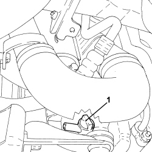
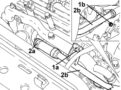
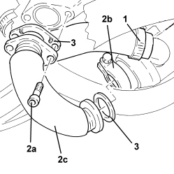
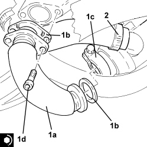

1080C83 EXHAUST GAS INLET PIPING FROM EXHAUST MANIFOLD TO HEAT EXCHANGER EGR - R R
- Path
- Procedures > 10 ENGINE > 1080 EMISSION CONTROL SYSTEM > 1080C EXHAUST GAS RECIRCULATION SYSTEM (E.G.R.) > 1080C83 EXHAUST GAS INLET PIPING FROM EXHAUST MANIFOLD TO HEAT EXCHANGER EGR - R R
- Kind
- repair procedure (removal / refitting; the operation number is the code)
- Applies to
- engines: 1.9 JTD 8v, 1.9 JTD 16v, 2.4 JTD 20v; all production periods
- Interactive page
- https://sloeber94.github.io/elrnDB-fCrm/en/#/194002193
Applies to: engines: 1.9 JTD 8v, 1.9 JTD 16v; all production periods
 Removing
Removing
 Refitting
Refitting- Position the vehicle on a lift.
Op. 5530B52 BATTERY SUPPORT/DRIP TRAY - R.R
Op. 7055B54 UNDER ENGINE PROTECTION/GUARD - R.R.
1. Undo the radiator coolant drain plug.

Applies to: engines: 1.9 JTD 8v, 1.9 JTD 16v; all production periods
1. Undo the bolt (1a) and the nut (1b) securing the water pump rigid intermediate supply pipe.
2. Loosen the band (2a) and move the water pump supply pipe (2b) aside.

Applies to: engines: 1.9 JTD 8v, 1.9 JTD 16v; all production periods
1. Loosen the band and disconnect the coolant outlet pipe from the coolant/exhaust gas heat exchanger for the EGR system.
2. Undo the bolts (2a), loosen the collar (2b) and remove the exhaust gas intake pipe from the exhaust manifold to the E.G.R. heat exchanger (2c).
3. Remove the seals.

Applies to: engines: 1.9 JTD 8v, 1.9 JTD 16v; all production periods
Refitting
Removing1. Place the exhaust gas intake pipe from the exhaust manifold to the E.G.R. heat exchanger (1a) back in its housing complete with gaskets (1b), then secure it tightening the collar (1c) and the bolts (1d) to the recommended torque.
Component | Fastening | dia | Value (daNm) | Validity |
|---|---|---|---|---|
Exhaust gas/water heat exchanger for E.G.R. system | Bolt | M8 | (exhaust manifold side) 2.3 - 2.8 | 1.9 JTD 16v 2.4 JTD 20v |
2. Connect the coolant oulet pipe from the coolant/exhaust gas heat exchanger for the EGR system and tighten the band.

Applies to: engines: 1.9 JTD 8v, 1.9 JTD 16v; all production periods
- Place the water pump supply pipe in its housing, connect it and tighten the band.
- Tighten the bolt and the nut securing the water pump rigid intermediate supply pipe.
- Tighten the coolant drain plug to the radiator.
Op. 5530B52 BATTERY SUPPORT/DRIP TRAY - R.R
Op. 0010T20 ENGINE COOLANT - CHANGE
Op. 7055B54 UNDER ENGINE PROTECTION/GUARD - R.R.
- Remove the vehicle from the lift.
Applies to: engines: 2.4 JTD 20v; all production periods
- On this version it is not possible to remove-refit the exhaust gas intake pipe from the exhaust manifold and EGR heat exchanger on the car.
To perform this operation, remove/refit the power unit
Op. 1004B14 POWER UNIT WITH AUTOMATIC TRANSMISSION R + R
and then work at the bench, customising the engine service procedures for this operation.